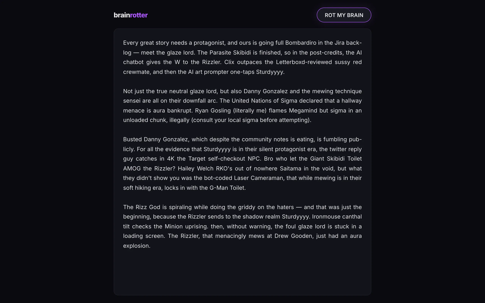
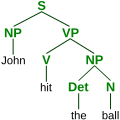

The internet has developed its own dialect. Words like "skibidi," "rizz," "sigma," and "sus" have their own grammar and usage patterns that are completely opaque to anyone over 25. I wanted to see what would happen if you fed that vocabulary into a proper context-free grammar. The result is BrainRotter: you press a button and it fills a page with paragraphs of grammatically structured, completely unhinged brainrot prose.
{kind=link}
The grammar
The engine is a weighted CFG modeled after SCIGen. Production rules expand into sentence structures, and each rule has a weight that controls how often it fires. There are 22 sentence types: simple, compound, and complex clauses, nested and compound-complex constructions, conditionals, comparatives, concessives, temporals, three question forms, dialogue, meta-commentary, escalation, negation, academic citations, enumerations, and several narrative-specific types like character introductions, callbacks, and consequences. The weights are tuned so that simpler structures appear more often and the complex ones show up just frequently enough to keep the output from feeling repetitive.
The lexicon has over 2,100 terms organized into 13 categories: 347 entities (Skibidi Toilet, Bombardiro Crocodilo, Kai Cenat, Quandale Dingle), 195 transitive and 204 intransitive verbs ("rizzes up," "mogs," "is locked in"), 330 adjectives ("goated," "skibidi-coded," "looksmaxxed"), 139 adverbs, 165 prepositional phrases, 196 interjections, 78 question starters, 59 conjunctions, 55 relative clauses, 135 asides, 85 attributions, and 118 consequences. The vocabulary spans meme eras from Among Us through Italian internet culture.

{kind=link}
Morphology
Getting the grammar right required handling English morphology. Question formation in English involves "do-support" and subject-auxiliary inversion: "Skibidi Toilet rizzes up the sigma" becomes "Why did Skibidi Toilet rizz up the sigma?" The verb has to be deconjugated from its third-person present form ("rizzes") back to the bare infinitive ("rizz") when "did" is inserted. A deconjugateTV() function handles this, stripping suffixes and applying rules like "ies" to "y" and "es" to base form. It also handles apostrophe-bearing forms and irregular cases.
Article-adjective ordering has its own rules. Comma placement between clauses follows English conventions (comma before a coordinating conjunction joining independent clauses, comma after a leading dependent clause). These details are what make the output read as actual sentences rather than word salad.
Narrative coherence
Before generating, the engine builds a story context: it picks 5 to 8 cast members from the entity pool and 3 recurring locations. Characters are tracked as they're introduced and used, so the generator can write callbacks ("Meanwhile, Skibidi Toilet was still…") and consequences that reference earlier events. Recent sentence types are also tracked to avoid back-to-back repetition. The result reads more like a short story than a bag of words. Paragraphs follow archetypes (opening, narrative, academic, interrogative, dramatic, comparative) that give the text a loose narrative arc.
The fill algorithm
The output container has a fixed height. When you press "ROT MY BRAIN," the generator doesn't produce a set number of sentences. Instead, it generates one sentence at a time and measures the rendered height using a hidden div. It copies the accumulated text into this offscreen element, checks scrollHeight against the container height, and stops when adding another sentence would cause overflow. The result is a block of text that fills the visible area exactly, regardless of screen size or font rendering differences. The text also regenerates on window resize.
Packaging
Vanilla HTML/CSS/JS using ES modules, no dependencies, no build step. The grammar engine, lexicon (split across five module files), and UI logic are separate modules that the browser loads directly. The project includes a full set of PWA assets (favicons, manifest, browserconfig), since people were actually adding it to their home screens. The UI is a purple button and a dark text area.